Practical walkthroughs on machine learning, data exploration and finding insight.
Resources
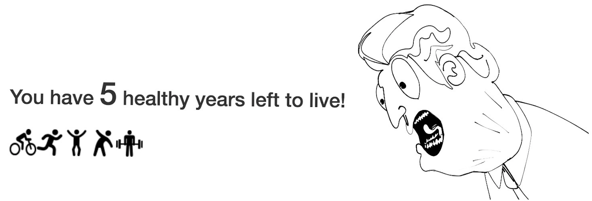
I’m going to walk through a simple linear regression model on estimating life expectancy in Python and build it into an interactive web application using Flask and PythonAnywhere. Check out a version that I built on TimeLeftToLive.com. I see this topic as an important awareness tool but I apologize in advance if I’m going to depress anybody. It’s up there with those interactive banking tools reminding you how much money you don’t have to properly retire. This is a surprisingly easy model to build using solid data curated by top statisticians. Two top sources are the World Health Organization (WHO) and the Central Intelligence Agency (CIA).
Here we’ll use the World Health Organization (WHO) Global Health Observatory Data and I recommend checking out the link because there are plenty more interesting data sets there.
We’ll use the combined data sets of ‘Life expectancy at birth (years)’ and ‘Life expectancy at age 60 (years)’. This is going to give us two points for our linear regression from which we can very easily extract any other age. Again, take this with a big grain of salt! These are only averages and life expectancy keeps improving everyday!
Life expectancy at birth (years) The average number of years that a newborn could expect to live, if he or she were to pass through life exposed to the sex- and age-specific death rates prevailing at the time of his or her birth, for a specific year, in a given country, territory, or geographic area. From the WHO site:
Life expectancy at age 60 (years) The average number of years that a person of 60 years old could expect to live, if he or she were to pass through life exposed to the sex- and age-specific death rates prevailing at the time of his or her 60 years, for a specific year, in a given country, territory, or geographic area.
A linear regression model attempts to explain the relationship between two or more variables using a straight line. ReliaSoft’s Experiment Design and Analysis Reference
We’re going to use the scipy.stats package for our linear regression needs but if you want more details on the topic, check out Linear Regression on Simple Wikipedia.
Let’s look at a simple example to illustrate how to make predictions with linear regression. We create a fictitious data set of two life expectancies, one for a newborn and another for a sixty-year-old:
import pandas as pd
import matplotlib.pyplot as plt
# create ficitous data set
simple_life_dataset = pd.DataFrame({'Age':[0, 60], 'Life Expectancy':[90, 30]})
simple_life_dataset.head()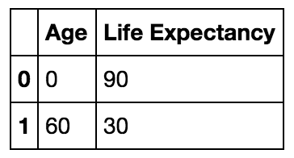
Now let’s feed that data into the stats.linregress function. We’ll only use two of its output, the slope and intercept. Those two values and the y = mx+b line equation, give us everything we need to estimate life-expectancy for any age.
import numpy as np
from scipy import stats
slope, intercept, r_value, p_value, std_err = stats.linregress(simple_life_dataset['Age'],simple_life_dataset['Life Expectancy'])
print('intercept: ', intercept)
print('slope: ', slope)('intercept: ', 90.0)
('slope: ', -1.0)Life Expectancy Estimate = Slope * Age + Intercept
np.ceil(slope * 20 + intercept)70.0
And if we plot our fictitious data set along with our new estimate:
fig, axes = plt.subplots(figsize=(5,5))
x = [0,20,60]
y = [90, 70, 30]
axes.plot(x,y, color='blue', linestyle='--', marker='o')
fig.suptitle('Life Expectancy')
axes.set_xlabel('age')
axes.set_xlim([-5,100])
axes.set_ylabel('life_expectancy')
axes.set_ylim([0,100])
plt.show()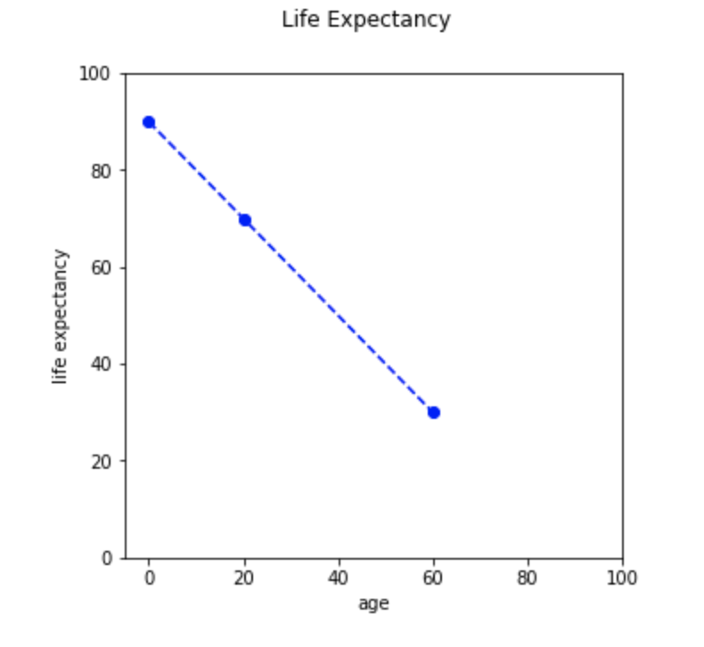
Let’s get real data and run through the exact same exercise as above.
# load WHO longetivity data
# http://apps.who.int/gho/data/node.main.688
who_list = pd.read_csv('http://apps.who.int/gho/athena/data/GHO/WHOSIS_000001,WHOSIS_000015?filter=COUNTRY:*&x-sideaxis=COUNTRY;YEAR&x-topaxis=GHO;SEX&profile=verbose&format=csv')
# save a local copy of the data set for our Flask prototype later on
who_list.to_csv('WHOSIS_000001,WHOSIS_000015.csv')
# Keep only useful features fix case display of country text
who_list = who_list[['GHO (DISPLAY)', 'YEAR (CODE)' , 'COUNTRY (DISPLAY)', 'SEX (DISPLAY)', 'Numeric']]
who_list['COUNTRY (DISPLAY)'] = [ctry.title() for ctry in who_list['COUNTRY (DISPLAY)'].values]
# print a few rows
who_list[who_list['COUNTRY (DISPLAY)']=='France'].head(10)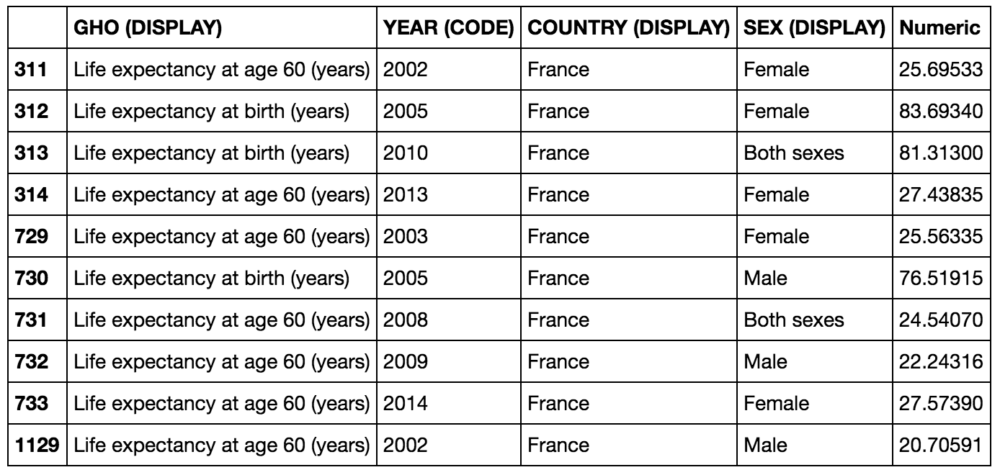
Let’s predict how many years of life I have left (yikes!). First let’s look at the data, this is really interesting. The life expectancy of a new born male in the USA using the latest data, is 77 years, while a 60-year-old male in the USA using the latest data is 22 years which totals 82 years, what gives? That’s one of the complexities of statistics, taking averages for a sixty-year-old implies that this person already survived 60 years, this is called Survivorship bias. And what the means for us here, is that the model will be slightly optimistic for those closer to zero and slightly pessimistic for those closer to 60.
country = 'United States Of America'
sex = 'Male'
# pull latest entries for birth and 60 years for a country and gender
sub_set = who_list[who_list['COUNTRY (DISPLAY)'].str.startswith(country, na=False)]
sub_set = sub_set[sub_set['SEX (DISPLAY)'] == sex]
# sort by year in descending order to work with the latest read
sub_set = sub_set.sort_values('YEAR (CODE)', ascending=False)
sub_set_birth = sub_set[sub_set['GHO (DISPLAY)'] == 'Life expectancy at birth (years)']
sub_set_60 = sub_set[sub_set['GHO (DISPLAY)'] == 'Life expectancy at age 60 (years)']
print('sub_set_birth:')
print(sub_set_birth.head(5))
print('sub_set_60:')
print(sub_set_60.head(5))
sub_set_birth:
GHO (DISPLAY) YEAR (CODE) \
16046 Life expectancy at birth (years) 2015
17532 Life expectancy at birth (years) 2014
15326 Life expectancy at birth (years) 2013
12318 Life expectancy at birth (years) 2012
17531 Life expectancy at birth (years) 2011
COUNTRY (DISPLAY) SEX (DISPLAY) Numeric
16046 United States Of America Male 76.93852
17532 United States Of America Male 76.76836
15326 United States Of America Male 76.45519
12318 United States Of America Male 76.43168
17531 United States Of America Male 76.29261
sub_set_60:
GHO (DISPLAY) YEAR (CODE) \
7481 Life expectancy at age 60 (years) 2015
7900 Life expectancy at age 60 (years) 2014
9935 Life expectancy at age 60 (years) 2013
16044 Life expectancy at age 60 (years) 2012
16211 Life expectancy at age 60 (years) 2011
COUNTRY (DISPLAY) SEX (DISPLAY) Numeric
7481 United States Of America Male 22.07029
7900 United States Of America Male 21.95811
9935 United States Of America Male 21.72074
16044 United States Of America Male 21.72548
16211 United States Of America Male 21.61596
Let’s pull the two latest data points from the WHO data set and plot it out.
# create data set with both points as shown in first example
lf_at_birth = sub_set_birth['Numeric'].values[0]
lf_at_60 = sub_set_60['Numeric'].values[0]
# let's organize our data and plot
age = [0,60]
life_expectancy = [lf_at_birth, lf_at_60]
fig, axes = plt.subplots(figsize=(5,5))
x = age
y = life_expectancy
axes.plot(x,y, color='blue', linestyle='--', marker='o')
fig.suptitle('Life Expectancy')
axes.set_xlabel('age')
axes.set_xlim([-5,100])
axes.set_ylabel('life expectancy')
axes.set_ylim([0,100])
plt.show()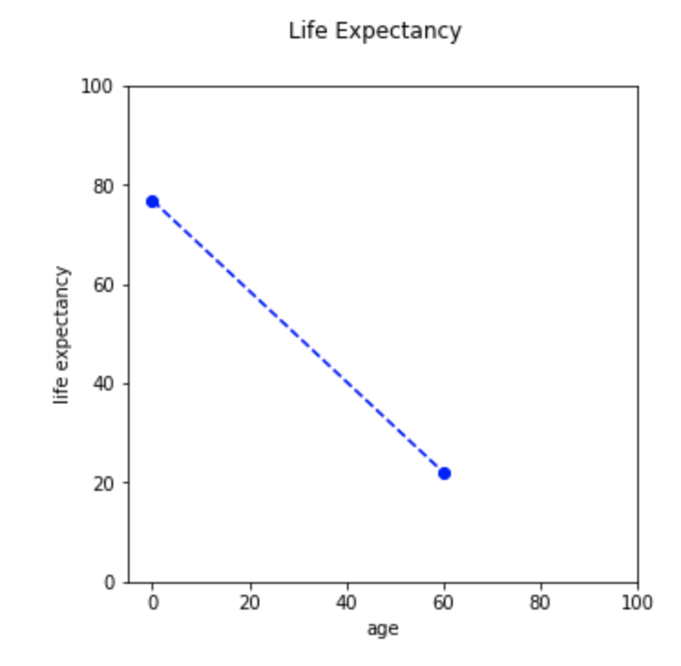
And now, let’s estimate my life expectancy:
# model
slope, intercept, r_value, p_value, std_err = stats.linregress(age, life_expectancy)
print('intercept: ', intercept)
print('slope: ', slope)
# predict life expectancy for an 49-year-old male in the USA:
np.ceil(slope * 49 + intercept)
('intercept: ', 76.938519999999997)
('slope: ', -0.91447049999999985)
33.0
Thirty-three more years, better make them count! Now, let’s wrap all the above code into a function so we can easily predict other ages with other parameters (and this will make our lives much easier when we port this out to Flask).
def get_life_expectancy(age, country, sex):
# pull latest entries for birth and 60 years
sub_set = who_list[who_list['COUNTRY (DISPLAY)'].str.startswith(country, na=False)]
sub_set = sub_set[sub_set['SEX (DISPLAY)'] == sex]
sub_set = sub_set.sort_values('YEAR (CODE)', ascending=False)
sub_set_birth = sub_set[sub_set['GHO (DISPLAY)'] == 'Life expectancy at birth (years)']
sub_set_60 = sub_set[sub_set['GHO (DISPLAY)'] == 'Life expectancy at age 60 (years)']
# not all combinations exsits so check that we have data for both
if len(sub_set_birth['Numeric']) > 0 and len(sub_set_birth['Numeric']) > 0:
# create data set with both points as shown in first example
lf_at_birth = sub_set_birth['Numeric'].values[0]
lf_at_60 = sub_set_60['Numeric'].values[0]
# model
slope, intercept, r_value, p_value, std_err = stats.linregress([0,60],[lf_at_birth, lf_at_60])
# predict for the age variable
return(np.ceil(intercept + slope * age))
else:
return None
# test the function out using a 22-year-old Japanese female:
get_life_expectancy(22, 'Japan', 'Female')66.0PythonAnywhere.com is a great way to rapidly prototype your Python interactive ideas and models on the Internet. First signup for a free account on PythonAnywhere.com.
Click on the ‘Files’ tab and create a new folder called ‘life_expectancy’ under your root account. In that folder, upload the ‘WHOSIS_000001,WHOSIS_000015.csv’ data set we saved prior. Create a Python file called ‘flask_app.py’ and paste the ‘flask_app.py’ code below.
from flask import Flask, render_template, request, url_for
import pandas as pd
import numpy as np
from scipy import stats
import logging
import datetime
import os.path
from flask import Markup
app = Flask(__name__)
app.config["DEBUG"] = True
# constructor - load once (otherwise setup a local csv copy to save on bandwidth usage)
BASE_DIR = os.path.dirname(os.path.abspath(__file__))
app.logger.error(BASE_DIR)
src = os.path.join(BASE_DIR, 'WHOSIS_000001,WHOSIS_000015.csv')
who_list = pd.read_csv(src)
who_list = who_list[['GHO (DISPLAY)', 'YEAR (CODE)' , 'COUNTRY (DISPLAY)', 'SEX (DISPLAY)', 'Numeric']]
who_list['COUNTRY (DISPLAY)'] = [ctry.title() for ctry in who_list['COUNTRY (DISPLAY)'].values]
country_list = sorted(set(who_list['COUNTRY (DISPLAY)'].values))
def get_life_expectancy(age, country, sex):
# pull latest entries for birth and 60 years
sub_set = who_list[who_list['COUNTRY (DISPLAY)'].str.startswith(country, na=False)]
sub_set = sub_set[sub_set['SEX (DISPLAY)'] == sex]
sub_set = sub_set.sort_values('YEAR (CODE)', ascending=False)
sub_set_birth = sub_set[sub_set['GHO (DISPLAY)'] == 'Life expectancy at birth (years)']
sub_set_60 = sub_set[sub_set['GHO (DISPLAY)'] == 'Life expectancy at age 60 (years)']
# not all combinations exsits so check that we have data for both
if len(sub_set_birth['Numeric']) > 0 and len(sub_set_birth['Numeric']) > 0:
# create data set with both points as shown in first example
lf_at_birth = sub_set_birth['Numeric'].values[0]
lf_at_60 = sub_set_60['Numeric'].values[0]
# model
slope, intercept, r_value, p_value, std_err = stats.linregress([0,60],[lf_at_birth, lf_at_60])
# predict for the age variable
return(np.ceil(intercept + slope * age))
else:
return None
@app.route('/', methods=['POST', 'GET'])
def interact_life_expectancy():
# select box defaults
default_age = 'Select Age'
selected_age = default_age
default_sex = 'Select Gender'
selected_sex = default_sex
default_country = 'Select Country'
selected_country = default_country
# data carriers
string_to_print = ''
healthy_image_list = []
if request.method == 'POST':
# clean up age field
selected_age = request.form["age"]
if (selected_age == default_age):
selected_age = int(29)
else:
selected_age = selected_age
# clean up sex field
selected_sex = request.form["sex"]
if (selected_sex == default_sex):
selected_sex = 'Both sexes'
# clean up country field
selected_country = request.form["country"]
if (selected_country == default_country):
selected_country = 'United States Of America'
# estimate lifespan
current_time_left = get_life_expectancy(age=int(selected_age), country=selected_country, sex=selected_sex)
if (current_time_left is not None):
# create output string
string_to_print = Markup("You have <font size='+10'>" + str(int(np.ceil(current_time_left))) + "</font> healthy years left to live!")
else:
string_to_print = Markup("Error! No data found for selected parameters")
current_time_left = 1
# healthy years
healthy_image_list = []
# squat.png, stretch.png, jog.png
healthy_years_left = int(np.ceil(current_time_left))
image_switch=0
if (healthy_years_left > 0):
for y in range(healthy_years_left):
if image_switch == 0:
healthy_image_list.append('static/images/Cycling.png')
elif image_switch == 1:
healthy_image_list.append('static/images/Jogging.png')
elif image_switch == 2:
healthy_image_list.append('static/images/JumpingJack.png')
elif image_switch == 3:
healthy_image_list.append('static/images/Stretching.png')
elif image_switch == 4:
healthy_image_list.append('static/images/WeightLifting.png')
else:
healthy_image_list.append('static/images/Yoga.png')
image_switch = -1
image_switch += 1
return render_template('main_page.html',
country_list = country_list,
default_country = selected_country,
default_age=selected_age,
default_sex=selected_sex,
string_to_print = string_to_print,
healthy_image_list = healthy_image_list)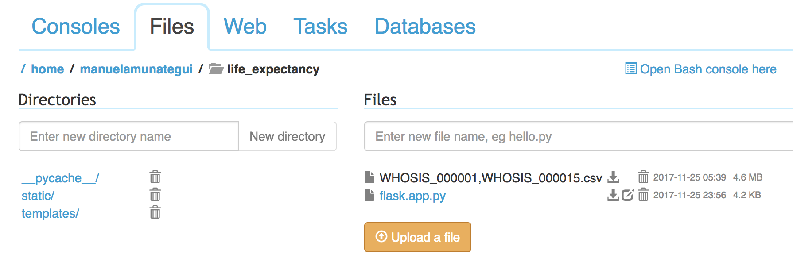
Still under ‘life_expectancy’ create another folder called ‘static’ and under it create another folder ‘images’ and upload the following six sport icons (only one at a time unfortunately):
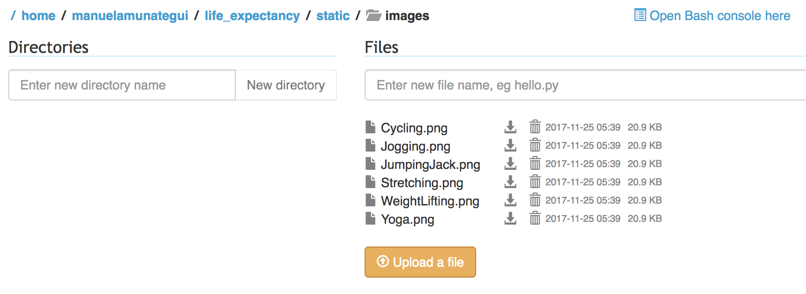
Go back to the ‘life_expectancy’ folder and create the ‘templates’ folder. Templates folder will store our HTML templates that Flask will use to display our content dynamically. Under the ‘templates’ folder, create a file called ‘main_page.html’ and paste the following dynamic HTML code:
<!DOCTYPE html>
<HTML lang="en">
<HEAD>
<TITLE>TimeLeftToLive.com</TITLE>
<META charset="utf-8">
<META name="viewport" content="width=device-width, initial-scale=1">
<link rel="stylesheet" href="https://maxcdn.bootstrapcdn.com/bootstrap/3.3.7/css/bootstrap.min.css">
<script src="https://ajax.googleapis.com/ajax/libs/jquery/3.2.1/jquery.min.js"></script>
<script src="https://maxcdn.bootstrapcdn.com/bootstrap/3.3.7/js/bootstrap.min.js"></script>
</HEAD>
<BODY>
<DIV class="container">
<DIV class="row">
<H2><a href='http://www.TimeLeftToLive.com' target='_blank'>TimeLeftToLive.com</a></H2>
<H4>More Data Science and Machine Learning Articles at <a href='http://amunategui.github.io' target='_blank'>amunategui.github.io</a></H4><BR>
<FORM id='submit_params' method="POST" action="{{ url_for('interact_life_expectancy') }}">
<SELECT class="selectpicker" name="sex">
<option value="{{default_sex}}" selected>{{default_sex}}</option>
<option>Both sexes</option>
<option>Female</option>
<option>Male</option>
</SELECT>
<SELECT class="selectpicker" name="age">
<option value="{{default_age}}" selected>{{default_age}}</option>
{% for age in range(1,100) %}
<option value="{{age}}">{{age}}</option>
{% endfor %}
</SELECT>
<SELECT class="selectpicker" name="country">
<option value="{{default_country}}" selected>{{default_country}}</option>
{% for country in country_list %}
<option value="{{country}}">{{country}}</option>
{% endfor %}
</SELECT>
<button type="submit" class="btn btn-primary">Show me</button>
<button type="button" class="btn btn-primary" onclick="location.href='/';" value="Reset">Reset</button>
</FORM>
<BR>
<H2>{{string_to_print}}</H2>
<BR>
<TABLE>
<TR>
{% for imag in healthy_image_list %}
{% if loop.index == 21 or loop.index == 41 or loop.index == 61 or loop.index == 81 %}
</TR><TR>
{% endif %}
<TD><img src={{imag}} width="40" height="40"></TD>
{% endfor %}
</TR>
</TABLE>
</BODY>
</HTML>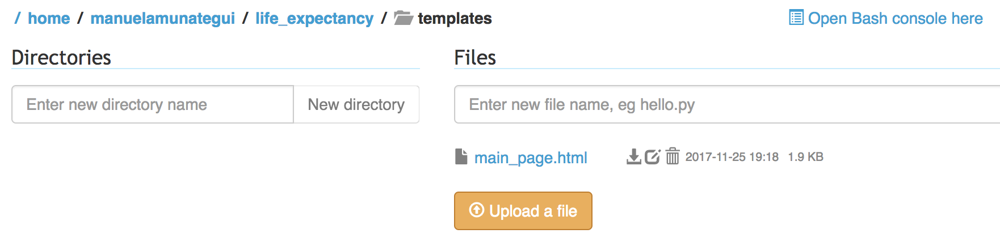
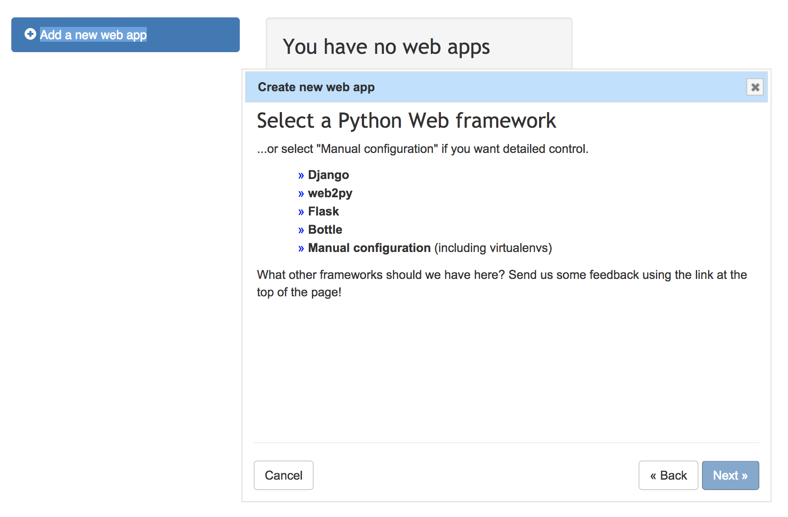
Under the ‘Quickstart new Flask project’, change the path from
/home/manuelamunategui/mysite/flask_app.pyto
/home/manuelamunategui/life_expectancy/flask_app.py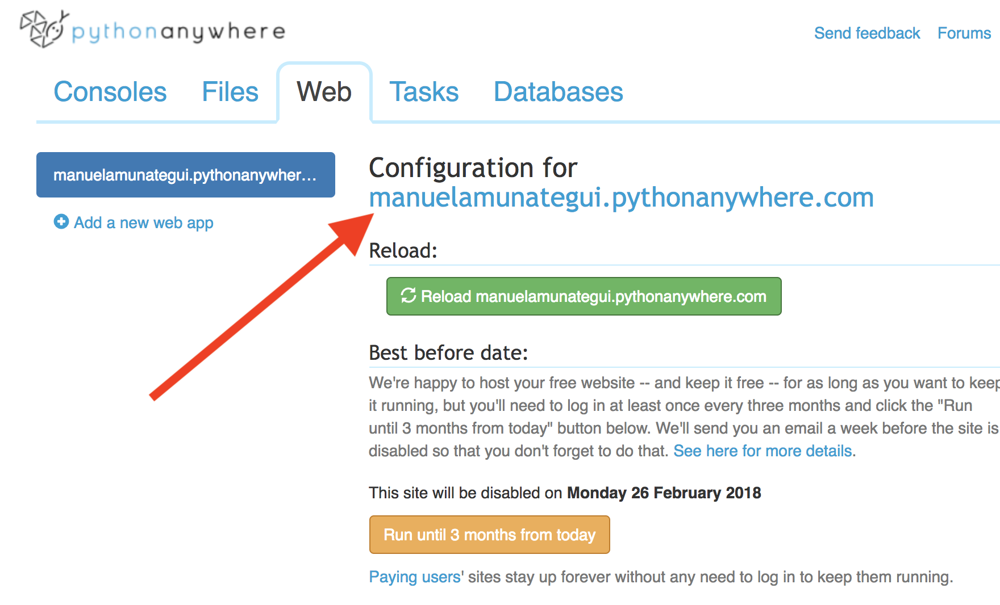
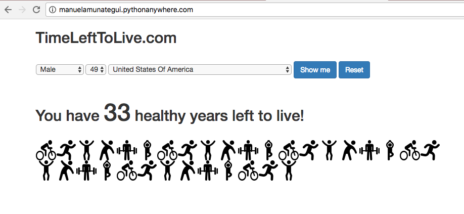
And a big thanks to my 14-year-old Lucas for the art work! Check his art portfolio out :-)